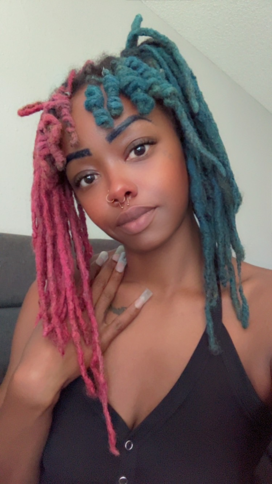

Hi, I'm Diamond!
I am a 32-year-old mother of four and an IT student experiencing an exciting season of change. I first picked up crocheting in high school as a hobby, but I now realize it could become a sustainable business that supports my ever-growing family.
Crochet also gives me a meaningful way to bring joy, comfort, and handmade love to the people closest to me. This guide is part of my journey, and I hope it encourages someone else to pick up a hook and begin.